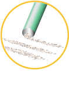
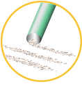

A Brief History of Opioids
Pain, Opioids and Medicinal Use
Click on the Milestones Below
3400 B.C. ‐ 300 A.D.
The earliest reference to opium growth and use is in 3400 B.C. when the opium poppy was cultivated in lower Mesopotamia. The Sumerians referred to the opium poppy as “Hul Gil” – the “Joy Plant,” and would pass the plant and its euphoric effects on to the Assyrians, who in turn passed it on to the Egyptians.1
Around 460-357 B.C., Hippocrates, the “father of medicine,” acknowledged opium’s usefulness as a narcotic and styptic in treating internal diseases, diseases of women and epidemics. He prescribed drinking the juice of the white poppy mixed with the seed of nettle.2
Alexander the Great introduced opium to India near 330 B.C., and the Arabs, Greeks and Romans used it as a sedative.2
Approximately 220-264 A.D., the noted Chinese surgeon Hua To of the Three Kingdoms used opium preparations and Cannabis indica for his patients to swallow before undergoing major surgery.3
1300 ‐ 1799 A.D.
During the Inquisition, opium disappeared from European historical record as anything from the east was linked to the devil.4
In 1527, Swiss-German alchemist, Paracelsus, who founded the discipline of toxicology, introduced opium pills containing citrus juice and “quintessence” of gold as an analgesic. Having experimented with various opium concoctions, Paracelsus came across a specific tincture of opium that was of considerable use in reducing pain. He called this preparation laudanum, derived from the Latin verb laudare, to praise.5 Laudanum remains available by prescription in the United States.
Thomas Sydenham, the celebrated “father of English medicine,” introduced Syndenham’s Laudanum, containing opium, sherry and herbs in 1680.6,7
1800s
In 1806 the German chemist Friedrich Wilhelm Adam Sertürner isolated morphine from opium. He named it morphine after the god of dreams, Morpheus.1
Morphine soon became the “mainstay” of medical treatment in the United States throughout the nineteenth century, used to treat pain, anxiety and respiratory problems as well as “consumption” and “women’s ailments.”8
Morphine was commonly used as a pain killer during the Civil War. Because such a large number of soldiers became addicted to the opiate given to them for battle injuries, the post-war morphine addiction prevalent among them came to be known as “Soldier's Disease.”9
In 1853, the hypodermic needle was invented, after which morphine began to be used in minor surgical procedures to treat neuralgia and gave rise to the medicalization of opioids.1, 8 Because of the abuse associated with morphine, a safer alternative was sought.
Heroin was synthesized as a derivative of morphine in 1898. The German chemical company Bayer offered Heroin as a cough suppressant and as a “non-addictive” morphine substitute for medical use.1,10

Early 1900s
In the early 1900s, the community group, Saint James Society in the U.S., began a campaign to supply free samples of heroin through the mail to morphine addicts who were trying to give up their habits.11
In 1909, Congress passed the Opium Exclusion Act barring importation of opium for the purposes of smoking.12 The Opium Exclusion Act has been considered the opening shot in the U.S. war on drugs.13
In a similar manner, the Harrison Narcotics Tax Act of 1914 placed a nominal tax and required physician and pharmacist registration for the distribution of opiates, but served as a de facto prohibition of the drugs.14, 15 That same year, Kennedy Foster wrote, in New York Medical Journal, “...morphinism is a disease, in the majority of cases, initiated, sustained and left uncured by members of the medical profession.”16
In 1916, a few years after Bayer stopped the mass production of heroin due to hazardous use and dependence, German scientists at the University of Frankfurt first synthesized oxycodone with the hope that it would retain the analgesic effects of morphine and heroin with less dependence.17

1920s & 1930s
Heroin sales stopped with the passage of The Heroin Act in 1924, making the importation, manufacture and possession of heroin illegal in the U.S. Spurred by growing rates of addiction, the Heroin Act made even its medicinal use illegal.12
During this time period mixed views on addiction and opiates existed in the medical community with many physicians believing opiates served as an alcohol substitute for those dealing with alcohol addiction.18
In 1938, the passage of The Food, Drug and Cosmetic Act gave authority to the U.S. Food and Drug Administration (FDA) to oversee the safety of food, drugs and cosmetics, and drugs at this time needed to be proven safe to be sold.19 Many medicines that were derived from opioids and already being sold such as codeine, morphine and oxycodone, were still allowed to be used by physicians despite the passage.20
1950s, 1960s and 1970s
Oxycodone became widely available when it was approved by the FDA in 1950 as Percodan® (oxycodone and aspirin tablets).21 Since the early 1960s, abuse of prescription opioids containing oxycodone has been a continuing problem in the U.S.22
After a lull, a resurgence in illegal heroin smuggled into the States was attributed to the U.S. involvement in Vietnam in the 1960s.11
In 1969, the World Health Organization (WHO) abandoned the belief that the medical use of morphine led inevitably to dependence. The WHO clarified that tolerance and physical dependence did not in itself constitute “drug dependence,” a diagnosis characterized by typical behaviors, including difficulty in controlling the assumption of drugs, compulsive use of the substance and inappropriate social behaviors.23
The Controlled Substances Act was passed in 1970 and began to consolidate all of the regulated prescription narcotic/opioid drugs under existing federal law into five separate schedules. The schedules were based upon the substance’s medicinal value, harmfulness and potential for abuse or addiction. Schedule I is reserved for the most dangerous drugs that are no longer allowed to be prescribed.12
The Drug Enforcement Agency was created by Executive Order in 1973, and President Richard Nixon declared the War on Drugs noting that “America has the largest number of heroin addicts of any nation in the world. Heroin addiction is the most difficult to control and the most socially destructive form of addiction in America today.”18
1980s
Vicodin® (hydrocodone and acetaminophen), which was introduced to the U.S. in 1978 by German pharmaceutical company, Knoll, became available as a generic formulation in 1983.24
Nevertheless, the American pain landscape in the 1980s was characterized by “opiophobia,” a doctor’s fear to prescribe opioids.25
At the same time, President Ronald Reagan and First Lady Nancy Reagan asked Americans to join a national crusade not to tolerate drugs by anyone, anytime and anyplace.26
In 1984, cocaine was reportedly used regularly by 4 to 5 million people compared to 500,000 Americans who were reported to be hooked on heroin.26
During this time period, physicians explored the use of prescription narcotics/opioids to treat cases of pain that were not due to terminal illness.27
1990s
The undertreatment of pain was the catalyst for clinicians and pain societies to successfully lobby for increased use of opioids for all pain types, including non-cancer pain.25
The prescription opioid landscape changed in the 1990s with physicians expanding treatment of pain and new options coming on to the market. In response to the growing recognition of the need to manage pain, a number of prescription opioids that were formulated to release their medicine over a period of time entered the market, continuing into the 2000s. The following opioids had this extended release technology:
- Morphine
- Fentanyl
- Oxycodone
- Hydromorphone
Marketing efforts to healthcare providers by pharmaceutical companies increased as patient advocates and pain societies asked for more information on pain medications, and the market grew for those medications.
By 1999, an estimated 4 million people, about 2 percent of the population age 12 and older, were using prescription drugs non-medically. Of these, 2.6 million misused pain relievers, 1.3 million misused sedatives and tranquilizers, and 900,000 misused stimulants.28
2000 – 2009
New standards for pain management incorporating pain as the “fifth vital sign” were issued by the Joint Commission on Accreditation of Healthcare Organizations (JCAHO).25
In this same time period, opioid prescribing increased.25
The abuse and misuse of opioid products containing oxycodone and hydrocodone, including brands such as OxyContin, Vicodin, Percocet and Lortab increased significantly in the early-to-mid 2000s, doubling between 1998 and 2008.29, 30
In 2002, 6.2 million Americans were abusing prescription drugs, and emergency room visits resulting from the abuse of narcotic pain relievers had increased dramatically.31
The misuse and abuse of prescription painkillers was responsible for more than 730,000 emergency department visits in 2009, a number that nearly doubled in just five years.32
In the mid 2000’s a number of pharmaceutical companies began research efforts into formulations of pain medications that would be harder to abuse.
Formulations of both extended-release and immediate-release opioids that contained some properties meant to deter abuse were approved by the FDA. None of those formulations prevented oral abuse.
In addition, various FDA programs to educate prescribers about the risks of misuse and abuse of opioid medications were implemented.
2010 – Today
With an increase in prescription drug abuse, pharmaceutical manufacturers and the FDA have responded with product formulations that contain abuse-deterrent properties, as well as remote monitoring programs.
The following are routes of misuse and abuse seen today:
 

In April 2015, the US Food and Drug Administration issued final guidance to assist the pharmaceutical industry in developing opioid drug products with potentially abuse-deterrent properties.1
As a general framework, the FDA has
categorized abuse-deterrent properties as follows*:
Physical/Chemical barriers
Physical barriers can prevent chewing, crushing, cutting, grating, or grinding. Chemical barriers can resist extraction of the opioid using common solvents like water, alcohol, or other organic solvents. Physical and chemical barriers can change the physical form of an oral drug rendering it less amenable to abuse.
Agonist/Antagonist combinations
An opioid antagonist can be added to interfere with, reduce, or defeat the euphoria associated with abuse. The antagonist can be sequestered and released only upon manipulation of the product. For example, a drug product may be formulated such that the substance that acts as an antagonist is not clinically active when the product is swallowed but becomes active if the product is crushed and injected or snorted.
Prodrug
A product that lacks opioid activity until transformed in the gastrointestinal tract can be unattractive for intravenous injection or intranasal routes of abuse.
Aversion
Substances can be combined to produce an unpleasant effect if the dosage form is manipulated prior to ingestion or a higher dosage than directed is used.
Delivery System
(including depot injectable formulations and implants) - Certain drug release designs or the method of drug delivery can offer resistance to abuse. For example, a sustained-release depot injectable formulation that is administered intramuscularly or a subcutaneous implant can be more difficult to manipulate.
traits
References
- 1 Abuse-Deterrent Opioids - Evaluation and Labeling Guidance for Industry, U.S. Department of Health and Human Services Food and Drug Administration, Center for Drug Evaluation and Research (CDER). April 2015.
A10086 4/15